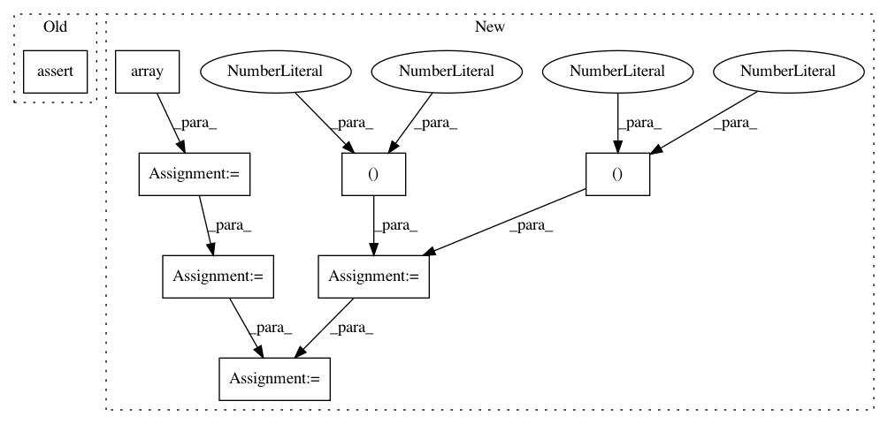

ee823bd38d1614733ae84ae464d5fdc61be4df9b,scipy/linalg/tests/test_basic.py,TestLstsq,test_simple_overdet,#TestLstsq#,741
Before Change
b = [1,2,3]
x,res,r,s = lstsq(a,b)
assert_array_almost_equal(x,direct_lstsq(a,b))
assert_almost_equal((abs(dot(a,x) - b)**2).sum(axis=0), res)
def test_simple_overdet_complex(self):
a = [[1+2j,2],[4,5],[3,4]]
b = [1,2+4j,3]
After Change
def test_simple_overdet(self):
for dtype in REAL_DTYPES:
a = np.array(((1,2),(4,5),(3,4)), dtype=dtype)
b = np.array((1,2,3), dtype=dtype)
for lapack_driver in TestLstsq.lapack_drivers:
for overwrite in (True,False):
// Store values in case they are overwritten
// later
a1 = a.copy()
b1 = b.copy()
out = lstsq(a1,b1,lapack_driver=lapack_driver,
overwrite_a=overwrite, overwrite_b=overwrite)
x = out[0]
residuals = out[1]
r = out[2]
assert_(r == 2, "unexpected efficient rank")
In pattern: SUPERPATTERN
Frequency: 3
Non-data size: 8
Instances
Project Name: scipy/scipy
Commit Name: ee823bd38d1614733ae84ae464d5fdc61be4df9b
Time: 2015-11-12
Author: alex.grigorievskiy@gmail.com
File Name: scipy/linalg/tests/test_basic.py
Class Name: TestLstsq
Method Name: test_simple_overdet
Project Name: nipy/dipy
Commit Name: 959bb1a6cd3e02463c06fb04ca1195bc6b3bc7b6
Time: 2020-07-20
Author: charles.poirier@usherbrooke.ca
File Name: dipy/reconst/tests/test_shm.py
Class Name:
Method Name: test_real_full_sh_mrtrix
Project Name: nipy/dipy
Commit Name: 959bb1a6cd3e02463c06fb04ca1195bc6b3bc7b6
Time: 2020-07-20
Author: charles.poirier@usherbrooke.ca
File Name: dipy/reconst/tests/test_shm.py
Class Name:
Method Name: test_real_full_sh_basis